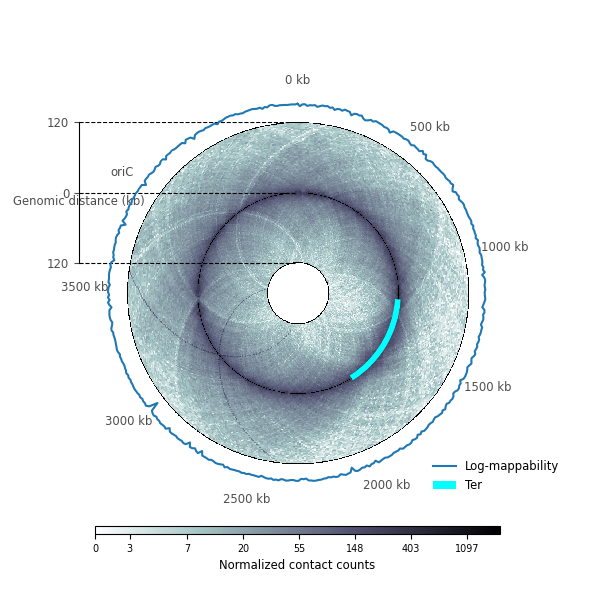
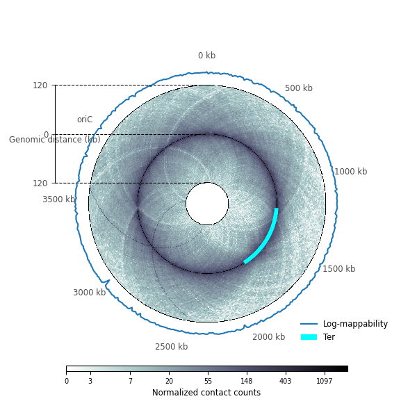

circHiC: circular visualization of Hi-C data and integration of genomic data¶
circHiC is a Python library, built upon the widely used Matplotlib library, to display Hi-C-like data in circular strips together with the possibility to overlay genomic data (plots and heat maps). Tools are light and fast, aiming to facilitate the exploration and understanding of bacterial chromosome structuring data.
 

{kind=link}
Genome wide contact frequencies obtained using Hi-C-like experiments have raised novel challenges in terms of visualization and rationalization of chromosome structuring phenomena. In bacteria, one difficulty consists in displaying data in a way that is congruent with the circularity of chromosomes. Standard representations of Hi-C data under the form of square matrices or horizontal bands are indeed not adapted to periodic conditions as those imposed by (most) bacterial chromosomes. circHiC fills this gap.
Citing circHiC¶
If you use circHiC in a scientific publication, we would appreciate citations to the following paper:
Junier, I., & Varoquaux, N. circHiC: circular visualization of Hi-C data and integration of genomic data. bioRxiv
Bibtex entry:
@article {Junier2020.08.13.249110,
author = {Junier, Ivan and Varoquaux, Nelle},
title = {circHiC: circular visualization of Hi-C data and integration of genomic data},
elocation-id = {2020.08.13.249110},
year = {2020},
doi = {10.1101/2020.08.13.249110},
publisher = {Cold Spring Harbor Laboratory},
URL = {https://www.biorxiv.org/content/early/2020/08/14/2020.08.13.249110},
eprint = {https://www.biorxiv.org/content/early/2020/08/14/2020.08.13.249110.full.pdf},
journal = {bioRxiv}}
Licence Information¶
Conditions on the use and redistribution of this package.
New BSD License
Copyright (c) 2020 The circHiC developers.
All rights reserved.
Redistribution and use in source and binary forms, with or without
modification, are permitted provided that the following conditions are met:
a. Redistributions of source code must retain the above copyright notice,
this list of conditions and the following disclaimer.
b. Redistributions in binary form must reproduce the above copyright
notice, this list of conditions and the following disclaimer in the
documentation and/or other materials provided with the distribution.
c. Neither the name of the circHiC Developers nor the names of
its contributors may be used to endorse or promote products
derived from this software without specific prior written
permission.
THIS SOFTWARE IS PROVIDED BY THE COPYRIGHT HOLDERS AND CONTRIBUTORS "AS IS"
AND ANY EXPRESS OR IMPLIED WARRANTIES, INCLUDING, BUT NOT LIMITED TO, THE
IMPLIED WARRANTIES OF MERCHANTABILITY AND FITNESS FOR A PARTICULAR PURPOSE
ARE DISCLAIMED. IN NO EVENT SHALL THE REGENTS OR CONTRIBUTORS BE LIABLE FOR
ANY DIRECT, INDIRECT, INCIDENTAL, SPECIAL, EXEMPLARY, OR CONSEQUENTIAL
DAMAGES (INCLUDING, BUT NOT LIMITED TO, PROCUREMENT OF SUBSTITUTE GOODS OR
SERVICES; LOSS OF USE, DATA, OR PROFITS; OR BUSINESS INTERRUPTION) HOWEVER
CAUSED AND ON ANY THEORY OF LIABILITY, WHETHER IN CONTRACT, STRICT
LIABILITY, OR TORT (INCLUDING NEGLIGENCE OR OTHERWISE) ARISING IN ANY WAY
OUT OF THE USE OF THIS SOFTWARE, EVEN IF ADVISED OF THE POSSIBILITY OF SUCH